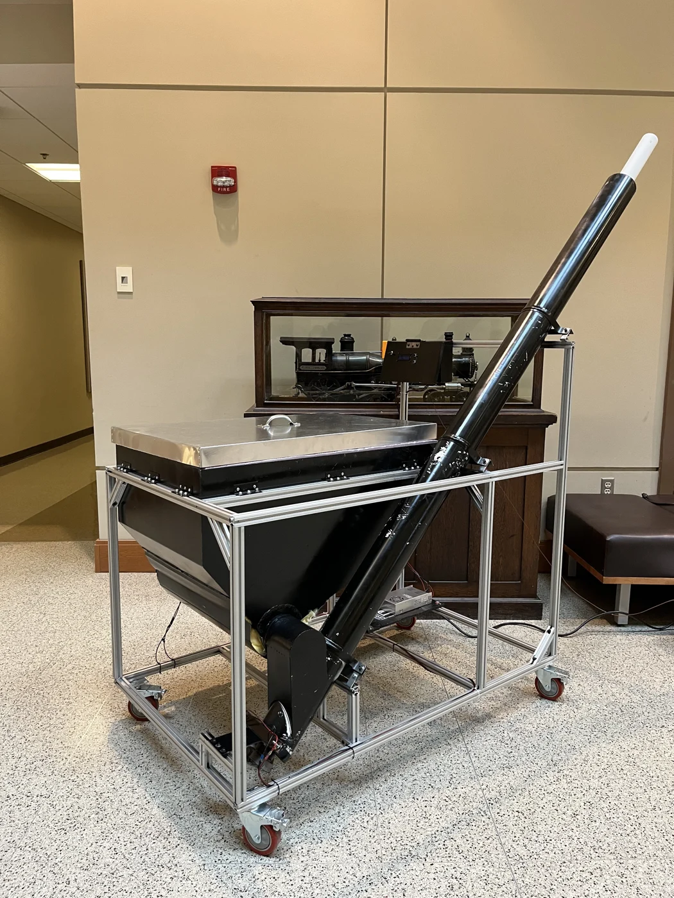
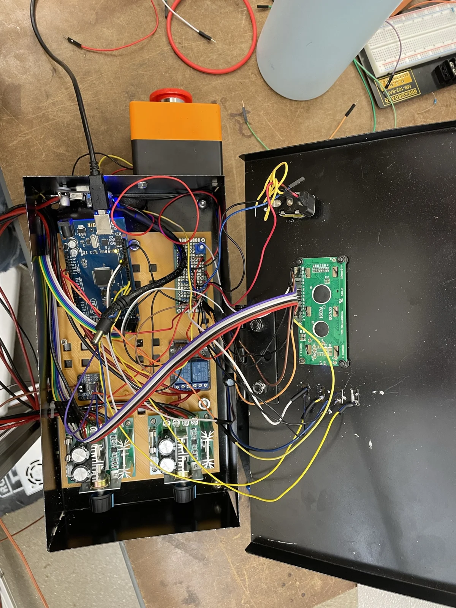

Purdue senior design · Four-person team lead
Automated dry-ice delivery
- Context
- Purdue senior design · Four-person team lead
- Status
- Full-scale capstone prototype
- Scope
- $1,000 project budget
Outcome & boundary
Full-scale prototype assembled and limited autonomous operation demonstrated. Freezing and auger jamming prevented sustained reliable operation.


Challenge
Automate dry-ice delivery to a vat used to simulate cold engine fuel-inlet conditions, replacing periodic manual additions. Budget, manufacturability and low-temperature reliability constrained the design.
Role & scope
I led the four-person team and independently designed the electrical architecture, control firmware, schematics and electronic assemblies. Mechanical design and fabrication were team efforts; I also used SolidWorks and static FEA to assess frame configurations.
Technical approach
Thermocouple measurements over SPI drove a lookup-table dispensing algorithm based on temperature difference and thermal calculations. Estimated dry-ice quantity became auger operating time. Settling delays between cycles aimed to reduce overshoot.
Implementation
The controller was an Arduino Mega, integrated with a 12 V supply, buck converter, relays, motor controllers, two brushed DC motors, thermocouple interface, buttons, emergency-stop input and LCD. A hopper, portioning auger and inclined delivery auger carried material to the vat.
Verification & results
The team assembled the full-scale prototype within the deadline and demonstrated autonomous dispensing and temperature regulation in limited testing. Moisture condensation and freezing caused auger jamming during extended operation. Sustained reliable operation was not demonstrated.
Trade-offs & next steps
The $1,000 budget constrained motors, materials and interface development. The requested LabVIEW interface was not implemented. Further work would need to address freezing, auger loading and delivery consistency before claiming dependable temperature control.
Source: Daniel's engineering experience archive. Photographs show the prototype; outcomes and limitations are described above.
Back to selected projects →